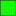

<!doctype html>
<html lang="en">
    <head>
        <meta charset="utf-8">
        <meta http-equiv="X-UA-Compatible" content="IE=edge">
        <meta name="viewport" content="initial-scale=1,user-scalable=no,maximum-scale=1,width=device-width">
        <meta name="mobile-web-app-capable" content="yes">
        <meta name="apple-mobile-web-app-capable" content="yes">
        <link rel="stylesheet" href="css/leaflet.css">
        <link rel="stylesheet" href="css/qgis2web.css"><link rel="stylesheet" href="css/fontawesome-all.min.css">
        <style>
        #map {
            width: 865px;
            height: 581px;
        }
        </style>
        <title></title>
    </head>
    <body>
        <div id="map">
        </div>
        <script src="js/qgis2web_expressions.js"></script>
        <script src="js/leaflet.js"></script>
        <script src="js/leaflet.rotatedMarker.js"></script>
        <script src="js/leaflet.pattern.js"></script>
        <script src="js/leaflet-hash.js"></script>
        <script src="js/Autolinker.min.js"></script>
        <script src="js/rbush.min.js"></script>
        <script src="js/labelgun.min.js"></script>
        <script src="js/labels.js"></script>
        <script src="data/PotencialBajo_1.js"></script>
        <script src="data/PotencialMedio_2.js"></script>
        <script src="data/PotencialAlto_3.js"></script>
        <script>
        var map = L.map('map', {
            zoomControl:true, maxZoom:28, minZoom:1
        }).fitBounds([[22.112322638096973,-104.70767368363869],[24.093619712256878,-101.75454868363869]]);
        var hash = new L.Hash(map);
        map.attributionControl.setPrefix('<a href="https://github.com/tomchadwin/qgis2web" target="_blank">qgis2web</a> &middot; <a href="https://leafletjs.com" title="A JS library for interactive maps">Leaflet</a> &middot; <a href="https://qgis.org">QGIS</a>');
        var autolinker = new Autolinker({truncate: {length: 30, location: 'smart'}});
        var bounds_group = new L.featureGroup([]);
        function setBounds() {
        }
        map.createPane('pane_MapaPotencialFrijol_0');
        map.getPane('pane_MapaPotencialFrijol_0').style.zIndex = 400;
        var layer_MapaPotencialFrijol_0 = L.tileLayer('https://mt1.google.com/vt/lyrs=r&x={x}&y={y}&z={z}', {
            pane: 'pane_MapaPotencialFrijol_0',
            opacity: 1.0,
            attribution: '',
            minZoom: 1,
            maxZoom: 28,
            minNativeZoom: 0,
            maxNativeZoom: 18
        });
        layer_MapaPotencialFrijol_0;
        map.addLayer(layer_MapaPotencialFrijol_0);
        function pop_PotencialBajo_1(feature, layer) {
            var popupContent = '<table>\
                    <tr>\
                        <td colspan="2">' + (feature.properties['id'] !== null ? autolinker.link(feature.properties['id'].toLocaleString()) : '') + '</td>\
                    </tr>\
                    <tr>\
                        <td colspan="2">' + (feature.properties['gridcode'] !== null ? autolinker.link(feature.properties['gridcode'].toLocaleString()) : '') + '</td>\
                    </tr>\
                    <tr>\
                        <td colspan="2"><strong>potencial</strong><br />' + (feature.properties['potencial'] !== null ? autolinker.link(feature.properties['potencial'].toLocaleString()) : '') + '</td>\
                    </tr>\
                </table>';
            layer.bindPopup(popupContent, {maxHeight: 400});
        }

        function style_PotencialBajo_1_0() {
            return {
                pane: 'pane_PotencialBajo_1',
                opacity: 1,
                color: 'rgba(35,35,35,1.0)',
                dashArray: '',
                lineCap: 'butt',
                lineJoin: 'miter',
                weight: 1.0, 
                fill: true,
                fillOpacity: 1,
                fillColor: 'rgba(255,1,18,1.0)',
                interactive: true,
            }
        }
        map.createPane('pane_PotencialBajo_1');
        map.getPane('pane_PotencialBajo_1').style.zIndex = 401;
        map.getPane('pane_PotencialBajo_1').style['mix-blend-mode'] = 'normal';
        var layer_PotencialBajo_1 = new L.geoJson(json_PotencialBajo_1, {
            attribution: '',
            interactive: true,
            dataVar: 'json_PotencialBajo_1',
            layerName: 'layer_PotencialBajo_1',
            pane: 'pane_PotencialBajo_1',
            onEachFeature: pop_PotencialBajo_1,
            style: style_PotencialBajo_1_0,
        });
        bounds_group.addLayer(layer_PotencialBajo_1);
        map.addLayer(layer_PotencialBajo_1);
        function pop_PotencialMedio_2(feature, layer) {
            var popupContent = '<table>\
                    <tr>\
                        <td colspan="2">' + (feature.properties['id'] !== null ? autolinker.link(feature.properties['id'].toLocaleString()) : '') + '</td>\
                    </tr>\
                    <tr>\
                        <td colspan="2">' + (feature.properties['gridcode'] !== null ? autolinker.link(feature.properties['gridcode'].toLocaleString()) : '') + '</td>\
                    </tr>\
                    <tr>\
                        <td colspan="2"><strong>potencial</strong><br />' + (feature.properties['potencial'] !== null ? autolinker.link(feature.properties['potencial'].toLocaleString()) : '') + '</td>\
                    </tr>\
                </table>';
            layer.bindPopup(popupContent, {maxHeight: 400});
        }

        function style_PotencialMedio_2_0() {
            return {
                pane: 'pane_PotencialMedio_2',
                opacity: 1,
                color: 'rgba(35,35,35,1.0)',
                dashArray: '',
                lineCap: 'butt',
                lineJoin: 'miter',
                weight: 1.0, 
                fill: true,
                fillOpacity: 1,
                fillColor: 'rgba(255,214,11,1.0)',
                interactive: true,
            }
        }
        map.createPane('pane_PotencialMedio_2');
        map.getPane('pane_PotencialMedio_2').style.zIndex = 402;
        map.getPane('pane_PotencialMedio_2').style['mix-blend-mode'] = 'normal';
        var layer_PotencialMedio_2 = new L.geoJson(json_PotencialMedio_2, {
            attribution: '',
            interactive: true,
            dataVar: 'json_PotencialMedio_2',
            layerName: 'layer_PotencialMedio_2',
            pane: 'pane_PotencialMedio_2',
            onEachFeature: pop_PotencialMedio_2,
            style: style_PotencialMedio_2_0,
        });
        bounds_group.addLayer(layer_PotencialMedio_2);
        map.addLayer(layer_PotencialMedio_2);
        function pop_PotencialAlto_3(feature, layer) {
            var popupContent = '<table>\
                    <tr>\
                        <td colspan="2">' + (feature.properties['id'] !== null ? autolinker.link(feature.properties['id'].toLocaleString()) : '') + '</td>\
                    </tr>\
                    <tr>\
                        <td colspan="2">' + (feature.properties['gridcode'] !== null ? autolinker.link(feature.properties['gridcode'].toLocaleString()) : '') + '</td>\
                    </tr>\
                    <tr>\
                        <td colspan="2"><strong>potencial</strong><br />' + (feature.properties['potencial'] !== null ? autolinker.link(feature.properties['potencial'].toLocaleString()) : '') + '</td>\
                    </tr>\
                </table>';
            layer.bindPopup(popupContent, {maxHeight: 400});
        }

        function style_PotencialAlto_3_0() {
            return {
                pane: 'pane_PotencialAlto_3',
                opacity: 1,
                color: 'rgba(35,35,35,1.0)',
                dashArray: '',
                lineCap: 'butt',
                lineJoin: 'miter',
                weight: 1.0, 
                fill: true,
                fillOpacity: 1,
                fillColor: 'rgba(13,254,0,1.0)',
                interactive: true,
            }
        }
        map.createPane('pane_PotencialAlto_3');
        map.getPane('pane_PotencialAlto_3').style.zIndex = 403;
        map.getPane('pane_PotencialAlto_3').style['mix-blend-mode'] = 'normal';
        var layer_PotencialAlto_3 = new L.geoJson(json_PotencialAlto_3, {
            attribution: '',
            interactive: true,
            dataVar: 'json_PotencialAlto_3',
            layerName: 'layer_PotencialAlto_3',
            pane: 'pane_PotencialAlto_3',
            onEachFeature: pop_PotencialAlto_3,
            style: style_PotencialAlto_3_0,
        });
        bounds_group.addLayer(layer_PotencialAlto_3);
        map.addLayer(layer_PotencialAlto_3);
        var baseMaps = {};
        L.control.layers(baseMaps,{' PotencialAlto': layer_PotencialAlto_3,' PotencialMedio': layer_PotencialMedio_2,' PotencialBajo': layer_PotencialBajo_1,"MapaPotencialFrijol": layer_MapaPotencialFrijol_0,},{collapsed:false}).addTo(map);
        setBounds();
        </script>
    </body>
</html>
